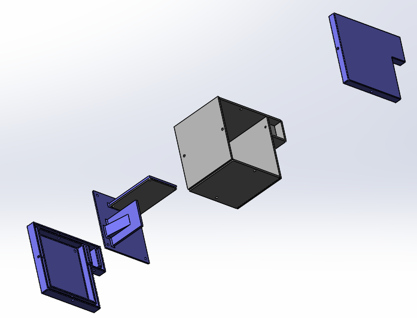

Rocketry: Test Enclosure
Waterloo Rocketry is the University of Waterloo's Rocket design team. Every year, we iteratively design and create a high-power rocket to launch at the Spaceport America Cup. Our rockets are fully student researched and designed.
Exploded View
The enclosure walls are waterjet cut steel (steel required to block radiation for our sensors), and the blue sections are 3D printed. We need to do a lot of testing since we only get to fly our rocket once a year. In 2021, I developed an enclosure for essential electronics and payload compenents for drop testing. This is to be dropped from a helicopter (we have some connections ^^) and recoververed via our new parachute design which I designed. It was designed in SolidWorks and physical analyis was used to ensure it was sufficiently strong to survive the forces experienced during the drop.

Isometric view
The team has perservered over the last team to continue development over the past year, but we've shifted focus to reasearch and design while we don't have campus access. We will be able to finsih construction of the enclosure and parachute system for the drop test soon with reopening. There is always a chance of conflicts, so the enclosure is designed modularly so parts can easily be switched out in the event of issues.